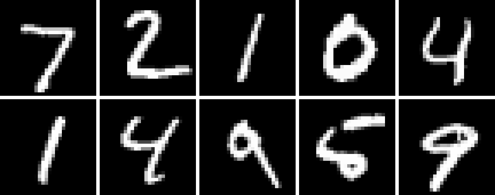

Guide
This guide covers how the wrapper relates to the underlying Python datasets library, the "julia" format and the transform pipeline, array orientation and working with images, and how to feed a dataset into a Julia data loader.
The examples below build small datasets in memory with the Dataset constructor (which accepts a Dict or NamedTuple of columns) so that they are self-contained and reproducible. In practice you will usually obtain a dataset from the Hub with load_dataset, e.g. load_dataset("ylecun/mnist", split="train"); everything shown here applies equally to those datasets.
Loading datasets
load_dataset forwards all its arguments to the Python datasets.load_dataset function. What it returns depends on the split argument:
- without
split, you get aDatasetDict(a dictionary of splits), e.g.load_dataset("nyu-mll/glue", "sst2"); - with a
split, you get a singleDataset, e.g.load_dataset("nyu-mll/glue", "sst2", split="train").
A DatasetDict is an AbstractDict{String, Dataset}, so keys, values, haskey, get, and iteration all work as expected:
julia> train = Dataset((; label=[1, 0, 1, 0]));
julia> test = Dataset((; label=[1, 1]));
julia> dd = DatasetDict(datasets.DatasetDict(pydict(train=train.py, test=test.py)))
DatasetDict({
train: Dataset({
features: ['label'],
num_rows: 4
})
test: Dataset({
features: ['label'],
num_rows: 2
})
})
julia> collect(keys(dd))
2-element Vector{String}:
"train"
"test"
julia> dd["train"]
Dataset({
features: ['label'],
num_rows: 4
})A Dataset supports 1-based indexing, length, firstindex/lastindex (so ds[begin] and ds[end] work), and iteration over observations:
julia> ds = Dataset((; label=[5, 0, 4]));
julia> length(ds)
3
julia> ds[begin]
Dict{String, Int64} with 1 entry:
"label" => 5
julia> ds[end]
Dict{String, Int64} with 1 entry:
"label" => 4
julia> [obs for obs in ds] # iteration yields one observation at a time
3-element Vector{Dict{String, Int64}}:
Dict("label" => 5)
Dict("label" => 0)
Dict("label" => 4)Indexing with a single integer returns one observation; indexing with a range or vector returns a batch, represented as a dictionary mapping each column name to a vector of values (see below).
Method forwarding
Any method or property of the wrapped Python object is available directly on the Julia wrapper. Method calls are forwarded to Python, and their results are converted back with py2jl. This means the whole datasets API is usable without a dedicated Julia binding for each method:
julia> ds = Dataset((; label=[0, 1, 2, 3]));
julia> ds.select(0:1) # keep the first two rows
Dataset({
features: ['label'],
num_rows: 2
})
julia> ds.train_test_split(test_size=0.5, seed=42)
DatasetDict({
train: Dataset({
features: ['label'],
num_rows: 2
})
test: Dataset({
features: ['label'],
num_rows: 2
})
})Keyword arguments are forwarded as Python keyword arguments, so calls like train_test_split(test_size=0.5) and shuffle(seed=0) behave exactly as in Python.
Methods forwarded to Python keep Python semantics, including 0-based indices (e.g. the argument to select above). Only the wrapper's own getindex/iteration interface is 1-based. Consult the datasets documentation for the exact meaning of each method's arguments.
The "julia" format and transforms
Datasets are returned in the "julia" format by default, so indexing yields native Julia values. This format mirrors datasets' own set_format/with_format mechanism and adds an extra Julia-side transform.
Setting a format
with_format returns a copy of the dataset with a given format; set_format! mutates it in place; reset_format! restores the default "julia" format. Passing nothing strips all formatting and hands back raw Python.
julia> ds = Dataset((; label=[5, 0, 4])); # "julia" format by default
julia> ds[1]
Dict{String, Int64} with 1 entry:
"label" => 5
julia> ds[1:3] # a batch: each column becomes a vector
Dict{String, Vector{Int64}} with 1 entry:
"label" => [5, 0, 4]
julia> ds["label"] # a whole column: a lazy `Column` view
3-element HuggingFaceDatasets.Column{Int64}:
5
0
4
julia> set_format!(ds, nothing); # strip formatting: raw Python observations
julia> ds[1]
Python: {'label': 5}Indexing by column name returns a lazy Column: it behaves like a vector (indexing, slicing, iteration, broadcasting) but converts elements only on access, so the whole column is never materialized at once. Call collect to get a plain Vector.
The special "julia" format is backed by datasets' numpy format and sets the Julia transform to py2jl, which recursively converts Python containers (lists, tuples, dicts, sets) and numpy arrays into native Julia values, copylessly when possible. Because the numpy format decodes array and image cells to numeric arrays, an image column comes back as a raw array rather than a colorview (see Working with images). Any other format string (e.g. "numpy", "torch", "pandas") is forwarded to the underlying Python set_format, and nothing clears the format entirely.
Custom Julia transforms
Beyond the format, you can attach an arbitrary Julia function that runs when indexing, with with_jltransform / set_jltransform!. The transform receives the raw Python batch, so convert it with py2jl first if you want to work with Julia types:
julia> ds = Dataset((; x=[1, 2, 3]));
julia> ds = with_jltransform(ds) do batch
b = py2jl(batch) # convert the Python batch to Julia types first
b["x"] .* 10
end;
julia> ds[1]
10
julia> ds[1:3]
3-element Vector{Int64}:
10
20
30The transform is always applied to a batch, even for a single-integer index: ds[1] is treated as ds[1:1] from the transform's point of view, and the single observation is then extracted.
Note that the format and the custom transform share the same slot: setting the "julia" format installs py2jl as the transform, and with_jltransform then replaces it — which is why the transform above calls py2jl itself. For layering additional per-batch processing on top of the "julia" format, prefer MLUtils.mapobs (see below), as in the examples/flux_mnist.jl script.
The order of operations when you index is:
- the Python format transform (if any) is applied by
datasets; - the Julia transform runs on the resulting Python batch (for the
"julia"format this ispy2jl; otherwise your own function); - for single-integer indexing, one observation is extracted from the batch.
with_format/with_jltransform return a shallow copy that shares the underlying Arrow data with the original but has an independent format, so setting a format or transform on the copy does not affect the original.
Transforming with map and filter
map and filter are the core datasets verbs for building a new dataset from an existing one. Both are available in two flavours.
The forwarded Python methods ds.map(...) / ds.filter(...) (see Method forwarding above) behave exactly as in Python: the callback receives raw Py rows or batches and must return Python-compatible values, so you write it in "PythonCall dialect" (pyconvert on the way in, pylist/pydict on the way out):
julia> ds = Dataset((; label=[5, 0, 4]));
julia> ds.map(x -> pydict(label=pylist([pyconvert(Int, l) + 100 for l in x["label"]])),
batched=true); # written against the Python APIThe Julia-friendly overloads map(f, ds) / filter(f, ds) bridge the callback for you: each example (or batch, with batched=true) is converted with py2jl before f sees it, and f's Julia return value is converted back to Python with jl2py (the write-path dual of py2jl). You can therefore write a pure-Julia transform while still getting datasets' batching, caching, and multiprocessing:
julia> ds2 = map(x -> Dict("label" => x["label"] .+ 100), ds; batched=true); # ds is julia-formatted
julia> ds2[1:3]["label"]
3-element Vector{Int64}:
105
100
104
julia> ds3 = filter(x -> x["label"] > 2, ds); # keep rows with label > 2
julia> ds3[:]["label"]
2-element Vector{Int64}:
5
4A few things to note:
- Batched or not. Without
batched=truethe callback sees one example at a time (aDictof scalar values, or whateverpy2jlreturns); withbatched=trueit sees a batch (aDictmapping each column to a vector). Return the same shape: a scalar (map) /Bool(filter) per example, or a vector per column /Vector{Bool}when batched. - Keyword arguments such as
batched,num_proc, andremove_columnsare forwarded to the Python method, so multiprocessing and caching work as usual. - Format is preserved. The returned
Datasetinherits the parent's"julia"format (or any customjltransform), sods2above is still"julia"-formatted and a chained pipeline likemap(f, dsj) |> ...keeps returning Julia values. - Reach for the Python method with
ds.map(...)whenever you specifically want to handmap/filtera raw Python callback instead.
Array orientation
numpy is row-major, Julia is column-major. The zero-copy conversion (numpy2jl, via DLPack) therefore returns an array whose dimensions are reversed relative to the Python side: a numpy array of shape (d₁, …, dₙ) becomes a Julia array of size (dₙ, …, d₁).
Under the "julia" format (backed by datasets' numpy format) an array-valued column decodes to a real N-D numeric array rather than a nested Vector{Vector}, and a range index stacks the rows along the last axis into a (dims…, N) tensor — observation axis last, matching the MLUtils convention:
julia> ds = Dataset((; x = [[1 2 3; 4 5 6], [7 8 9; 10 11 12]]));
julia> ds[1]["x"] # one observation: a real 2×3 matrix
2×3 Matrix{Int64}:
1 2 3
4 5 6
julia> ds[1:2]["x"] # a batch stacks along the last axis
2×3×2 Array{Int64, 3}:
[:, :, 1] =
1 2 3
4 5 6
[:, :, 2] =
7 8 9
10 11 12To recover the Python orientation of a single array, reverse the axes with permutedims:
julia> a = numpy2jl(jl2numpy([1 2 3; 4 5 6])); # a Julia array, transposed vs. numpy
julia> size(a)
(2, 3)
julia> size(permutedims(a, reverse(1:ndims(a))))
(3, 2)The reverse conversion jl2numpy is symmetric: it shares memory through the buffer protocol and reverses the axes, so numpy2jl(jl2numpy(x)) == x holds and writes propagate in both directions.
Working with images
An Image feature (datasets.Image) is decoded to a numeric array by the numpy format before py2jl sees it, so under the "julia" format an image column is a raw numeric array, not an ImageCore colorview. Combined with the axis reversal above:
- a grayscale
(H, W)image becomes a(W, H)UInt8matrix; - a color
(H, W, C)image becomes a(C, W, H)UInt8array (channel axis first); - a fixed-size image column stacks on a range index (to
(W, H, N)/(C, W, H, N)), while a ragged (variable-size) column falls back to aVectorof per-row arrays.
That raw layout is what you want for feeding a model (see Integration with MLUtils and data loaders and the MNIST example), but to look at an image you turn it back into a colorview and undo the transpose with permutedims. Two small helpers cover the common cases:
using HuggingFaceDatasets, ImageCore
# grayscale: (W, H) UInt8 -> (H, W) Matrix{Gray{N0f8}}
to_gray(a) = permutedims(colorview(Gray, reinterpret(N0f8, a)))
# color: (C, W, H) UInt8 -> (H, W) Matrix{RGB{N0f8}}
to_rgb(a) = permutedims(colorview(RGB, reinterpret(N0f8, a)))reinterpret(N0f8, a) reads the raw UInt8 bytes as normalized [0, 1] fixed-point values (no copy), colorview wraps the leading axis into Gray/RGB pixels, and permutedims swaps the spatial axes back to the original (H, W) orientation. Rendering the first ten MNIST test digits as a mosaic:
julia> using HuggingFaceDatasets, ImageCore, MosaicViews
julia> ds = load_dataset("ylecun/mnist", split="test"); # "julia" format by default
julia> digits = [to_gray(ds[i]["image"]) for i in 1:10];
julia> mosaicview(cat(digits...; dims=3); nrow=2, npad=1, fillvalue=Gray(1), rowmajor=true)
In VS Code, a Pluto/Jupyter notebook, or any ImageInTerminal-enabled REPL such an image renders inline. To write it to disk, add FileIO (with a backend such as ImageIO) and save it:
julia> using FileIO
julia> save("digit.png", to_gray(ds[1]["image"]))The same to_rgb helper handles color datasets (e.g. to_rgb(ds[1]["img"]) on CIFAR-10), and it round-trips exactly: the recovered array is pixel-for-pixel identical to the image datasets decodes on the Python side.
Integration with MLUtils and data loaders
A Dataset implements the length/getindex interface expected by MLUtils.jl, so numobs, getobs, mapobs, and data loaders such as Flux.DataLoader work directly:
julia> using MLUtils
julia> ds = Dataset((; x=[1, 2, 3, 4]));
julia> numobs(ds)
4
julia> getobs(ds, 2)
Dict{String, Int64} with 1 entry:
"x" => 2
julia> mapped = mapobs(batch -> batch["x"] .* 10, ds); # lazily transform observations
julia> getobs(mapped, 1:4)
4-element Vector{Int64}:
10
20
30
40Putting it together for MNIST: the default "julia" format already stacks the image column into a (W, H, N) numeric array, so you mapobs a transform that rescales it to Float32 (plus Flux.onehotbatch for the labels), then hand the result to a Flux.DataLoader:
julia> train_data = load_dataset("ylecun/mnist", split="train");
julia> train_data = mapobs(mnist_transform, train_data)[:]; # lazily map, then materialize
julia> train_loader = Flux.DataLoader(train_data; batchsize=128, shuffle=true);Materializing with [:] loads the whole (transformed) dataset into memory, which is fastest for small datasets like MNIST. Dropping the [:] keeps loading on-the-fly, which is slower per epoch but avoids holding everything in memory.
This snippet needs the Hub and the Flux/ImageCore stack, so it is not run as a doctest; a complete, runnable version — including mnist_transform and the training loop — lives in examples/flux_mnist.jl.